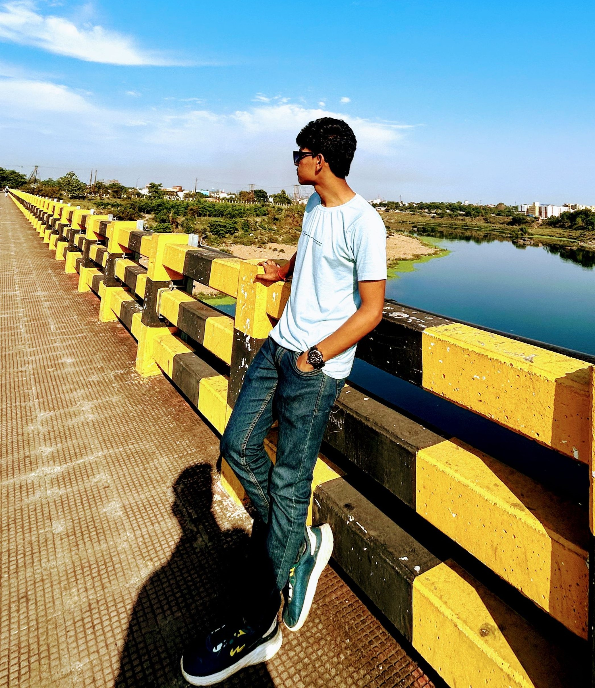
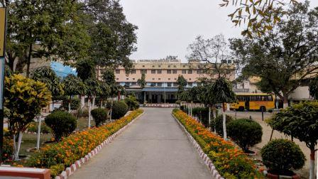

Hi there! I am Suraj Senapati, a student who is curently interested in coding and machines and because of this interest he is intended to pursue B.tech in Computer Science & Engineering. I am pursuing my degree from Institute of Technical Education & Research(ITER), Bhubaneswar, India. Currently, I want to live and enjoy my life to the fullest. I have interest in many things such as sports. As talking about sports I am most interested in playing volleyball, Cricket and Kabaddi. I was in my school team and have won many prizes because of my agility and dedication in sports. I am also interested in Sketching and cooking. I love to listen and play music. I am able to play flute but I am not so good in that. I have a keen interest in learning new things. I am excited to learn from the ups and down and the experiences that I am going to have in my further learning journey.
Thank you!!

Primary And Secondary Education obtained from Baldwin Farm Area High School, Kadma, Jamshedpur, Jharkhand, India
Currently completing B.tech Degree from Institute of Technical Education & Research(ITER), Bhubaneswar, India